STARTER > INSPECTION |
| 1. INSPECT STARTER ASSEMBLY |
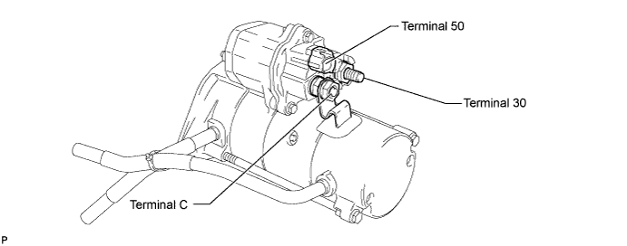
Perform the operation test without load.
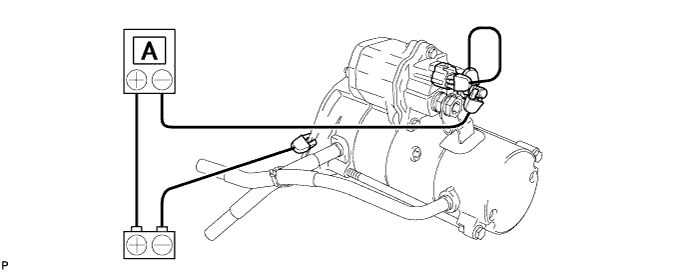
Grip the starter in a vise.
Connect the battery and an ammeter to the starter with terminal 30 disconnected.
Connect terminal 30 to the battery and check that the starter rotates smoothly and steadily while the pinion gear is moving outward. Then measure the current.
| 2. INSPECT STARTER ARMATURE ASSEMBLY |
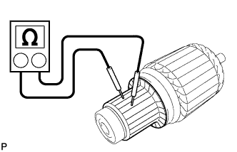 |
Inspect the commutator for an open circuit.
Measure the resistance according to the value(s) in the table below.
| Tester Connection | Condition | Specified Condition |
| Commutator | Always | Below 1 Ω |
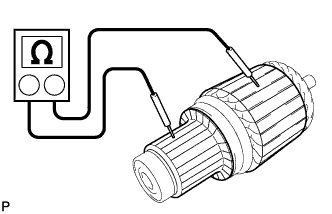 |
Inspect the commutator for a short circuit.
Measure the resistance according to the value(s) in the table below.
| Tester Connection | Condition | Specified Condition |
| Commutator - Armature coil core | Always | 10 kΩ or higher |
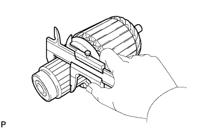 |
Using a vernier caliper, measure the commutator diameter.
 |
Measure the undercut depth of the commutator.
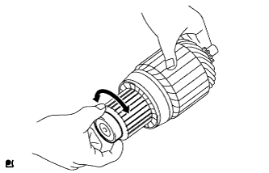 |
Check that the bearing rotates smoothly.
If necessary, replace the starter armature assembly.
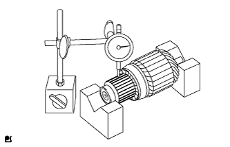 |
Inspect the commutator circle runout.
Place the commutator on V-blocks.
Using a dial indicator, measure the circle runout.
| 3. INSPECT STARTER YOKE ASSEMBLY |
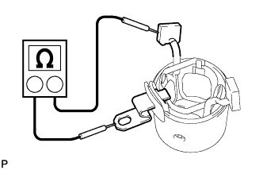 |
Inspect the field coil for an open circuit.
Measure the resistance according to the value(s) in the table below.
| Tester Connection | Condition | Specified Condition |
| Terminal C plate - Brushes | Always | Below 1 Ω |
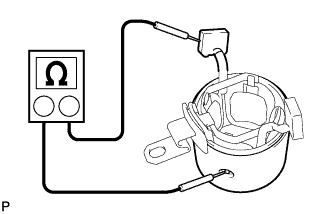 |
Inspect if the field coil is grounded.
Measure the resistance according to the value(s) in the table below.
| Tester Connection | Condition | Specified Condition |
| Brushes - Starter yoke body | Always | 10 kΩ or higher |
| 4. INSPECT STARTER BRUSH |
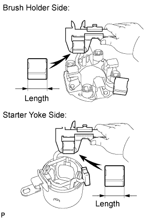 |
Using a vernier caliper, measure the brush length.
| 5. INSPECT STARTER BRUSH HOLDER ASSEMBLY |
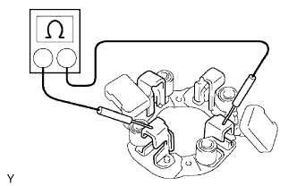 |
Measure the resistance according to the value(s) in the table below.
| Tester Connection | Condition | Specified Condition |
| Positive (+) brush holder - Negative (-) brush holder | Always | 10 kΩ or higher |
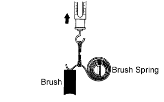 |
Inspect the load of the brush spring.
Take a pull scale reading immediately after the brush spring separates from the brush.
| 6. INSPECT STARTER CLUTCH SUB-ASSEMBLY |
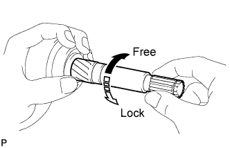 |
Check the starter clutch operation.
Hold the clutch and bearing with one hand and turn the shaft with the other. Check that the inner sleeve turns easily in the "free" direction but cannot turn in the "lock" direction as shown in the illustration.
If the starter clutch sub-assembly does not operate as specified, replace the starter clutch sub-assembly.
| 7. INSPECT MAGNET STARTER SWITCH ASSEMBLY |
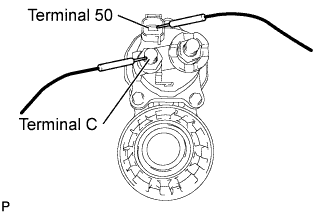 |
Check the pull-in coil for an open circuit.
Measure the resistance according to the value(s) in the table below.
| Tester Connection | Condition | Specified Condition |
| Terminal 50 - Terminal C | Always | Below 0.3 Ω |
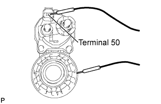 |
Check the hold-in coil for an open circuit.
Measure the resistance according to the value(s) in the table below.
| Tester Connection | Condition | Specified Condition |
| Terminal 50 - Housing Body | Always | Below 0.8 Ω |